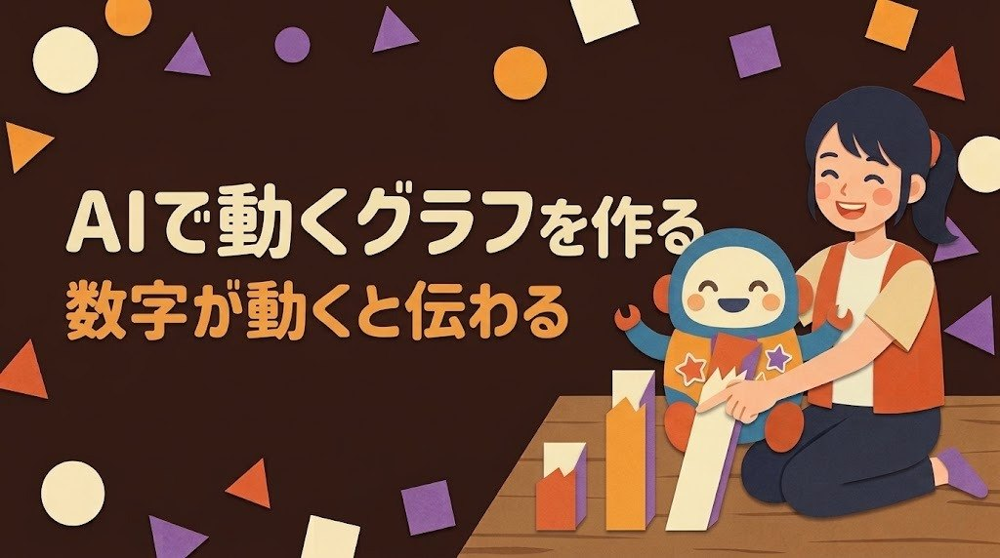

AIでアニメーションするグラフを作る｜数字が動くと伝わる

月次報告の数字、表のままだと見てもらえている気がしない。そんなふうに感じたことはありませんか。
あなたの数字は、グラフが動きだすだけで、ぐっと目にとまりやすくなります。棒が下からのびて、最後に「1,240」と止まる。数字が0から増えていく。それだけで、どこが大きく伸びたのかが一瞬で伝わります。
この記事では、ChatGPT・Claude・Geminiに頼んで動くグラフを作る方法を紹介します。いちばん大事な「あなたの数字を、1つもずらさずに使ってもらう頼み方」も、コピーして使える形でお見せします。
確認日：2026年10月23日（公式のヘルプで確認。画面や名前は変わることがあります）
動くグラフが伝わりやすい理由
止まっているグラフは、全部の棒が同時に目に入ります。動くグラフは、見る人の目を「どこから見ればいいか」へ順番に案内してくれます。
| 動き | 伝わること | 向いている場面 |
|---|---|---|
| 棒が順番にのびる | 月ごとの増え方、どこで伸びたか | 月次報告、売上や生産数の推移 |
| 数字がカウントアップする | 合計や達成の大きさ | 年間の合計、目標の達成 |
| 並び順が入れかわる | 順位の変化 | 製品別の売れ筋、ゲームのランキング |
| 色が変わる | 目標を超えたかどうか | 不良率が基準内か、予算内か |
ポイントは、動きは「見る順番」を決めるためのものということです。動きが多すぎると目が疲れるので、1つのグラフに動きは1〜2種類までにしておくと、すっきり伝わります。
作り方は大きく2つ
AIに動くグラフを作ってもらう方法は、大きく分けて2つあります。
| 方法 | 中身 | 向いている人 |
|---|---|---|
| AIのチャットで作る | ChatGPT・Claude・Geminiに、HTML（ブラウザで開くページのファイル）として作ってもらう | ふだん使っているAIで、気軽に試したい人 |
| 専用のツールを使う | 動くグラフ作りに特化したサービスに、数字と希望を伝える | 動画として書き出したい人 |
この記事では、まずAIのチャットで作る方法を中心に紹介し、最後に専用ツールという選び方にもふれます。
AIのチャットで作れる場所
3つのAIには、それぞれ作ったものを会話の横に表示して、その場で動かせる場所があります。
Claude：アーティファクト
公式ヘルプでは、アーティファクトは会話の横に開き、編集したり、あとで戻ったり、共有したりできるものと説明されています。作れるものの例として、1ページのウェブサイトや小さな対話型ツールが挙げられています。無料・Pro・Max・Team・Enterpriseの各プランで使え、「設定」の「機能」で、コード実行とファイル作成の設定をオンにしておく必要があります。作ったものはサイドバーの「アーティファクト」のタブにまとまります。
ChatGPT：キャンバス
OpenAIのヘルプでは、キャンバスの中のReactやHTMLのコードは、安全に区切られた環境で動かして結果を見られると説明されています。キャンバスは無料と有料の両方のユーザーが使える機能として案内されています。使える操作は、プランや端末、会社のワークスペースの設定によって変わることがあると書かれています。
Gemini：Canvas
Geminiのヘルプでは、gemini.google.com の入力欄の下にある「ファイルを追加」のアイコンから「Canvas」を選び、頼みたいことを送ると使えると説明されています。ドキュメントやアプリ、コードを作れて、右上のアイコンからプレビューのエラーを確かめることもできます。Googleの料金ページでは、Canvasは無料プランの機能として載っています。
どのAIでも、うまく表示されないときは「1つのHTMLファイルにまとめて」と頼むと、そのまま保存して使いやすくなります。
コピーして使える依頼文
数字を正確に保つためのお願いを、あらかじめ入れてあります。【 】の中だけ、あなたの内容に書きかえて使ってください。
依頼文（動く棒グラフ）
- 動く棒グラフを、1つのHTMLファイルで作ってください
- データは次のとおりです。この数字だけを使い、丸めたり、足したり、作ったりしないでください
- 【4月 1,180 ／ 5月 1,050 ／ 6月 1,240 ／ 7月 1,310】
- 単位は【個】です。グラフのタイトルは【月別の生産数】にしてください
- 棒は左から順番に、1本あたり約0.5秒で下からのびるようにしてください
- のびきったら、各棒の上にデータどおりの数字を表示してください
- 【6月】の棒だけ色を変えて目立たせてください
- 最後に、グラフに使った数字の一覧を表でも出してください（わたしが元の数字と見比べるためです）
依頼文（カウントアップする数字）
- 0から数字が増えて止まる表示を、1つのHTMLファイルで作ってください
- 止まる数字は【12,480】、見出しは【今年の出荷数】、単位は【個】です
- この数字は変えないでください。約2秒で止まるようにしてください
- 下に小さく【2026年4月〜9月の合計】と表示してください
最後の「数字の一覧を表でも出して」の一行が、この記事でいちばんのおすすめです。AIは文章や見た目を整えるのが得意な一方で、数字を写すときにまちがえることがあります。表で出してもらえば、元の数字と1つずつ見比べられます。
数字を正確に保つ4つのコツ
- 数字はあなたが渡す：「去年の売上でグラフを作って」ではなく、あなたの手元の数字を貼りつけて渡す
- 「この数字だけを使って」と書く：丸めたり、合計を計算しなおしたりしないよう、はっきり伝える
- 完成したら見比べる：グラフに表示された数字と、元の数字を1つずつ確かめる。4か月ぶんなら1分ほどで終わります
- 合計や割合は自分で計算した値を渡す：Excelで出した合計や不良率を、そのまま渡すほうが安心
Excelの表から渡すときは、必要な列だけをコピーして貼りつけると、AIが読みまちがえにくくなります。会社の数字を社外のAIに入れてよいかは、先に会社のルールを確かめておくと安心です。
仕事で使う：月次報告をひと目で伝える
印刷・製造の現場で、毎月の報告資料を作っているあなたなら、こんな使い方が役立ちます。
| 報告の内容 | 動きの案 |
|---|---|
| 月別の生産数 | 棒が月ごとに順番にのびる。いちばん多い月だけ色を変える |
| 不良率の推移 | 折れ線が左から右へ描かれる。基準の線を点線で引き、超えた月は赤にする |
| 年間の合計出荷数 | 数字がカウントアップして止まる |
| 製品別の売上の順位 | 3か月ぶんの順位が入れかわる |
会議でHTMLファイルをブラウザで開いて画面に映せば、報告の最初の10秒で全員の目がそろいます。資料に貼るときは、動きが止まったあとの画面をスクリーンショットにすると、印刷する資料にも使えます。
毎月同じ形で作るなら、依頼文をメモ帳に残しておき、数字の行だけを書きかえて使うと、翌月からは数分で作れます。残業を30分減らす小さな一歩になります。
遊びで使う：家計やゲームの記録を楽しく
動くグラフは、家の中でも楽しく使えます。
| 記録 | 動きの案 | ひとこと |
|---|---|---|
| 毎月の食費 | 棒が月ごとにのび、予算の線を超えた月だけ色が変わる | 家族で見ると、節約の作戦会議が楽しくなります |
| 貯金の合計 | 数字がカウントアップして止まる | 目標の金額に近づくのが目で見えます |
| ゲームのスコアやレベル | 週ごとの記録が順番にのびる | 自己ベストの週を光らせると盛り上がります |
| 子どもの読書の冊数 | 本のアイコンが1冊ずつ増える | 「あと何冊で目標」が伝わりやすい |
| 歩いた歩数 | 1週間の折れ線が描かれる | 運動のやる気づくりに |
家計の数字も、仕事と同じように「この数字だけを使って」と書いておくと安心です。子どもと一緒に、色や動きの速さを決めながら作るのも楽しい時間になります。
専用のツールという選び方
AIのチャットで作る方法のほかに、動くグラフ作りに特化したサービスもあります。たとえば、iArt.aiのアニメーショングラフ作成ページは、みずからを「AIモーショングラフィックスプラットフォーム」と紹介しており、CSV（表のデータを文字で表した形式）や数字を貼りつけて、グラフの種類や雰囲気を文章で伝えると、動くグラフを作るしくみだと説明しています。同じページでは、MP4の動画として書き出せることや、登録時のクレジットで試せることが案内されています。
動画として保存してSNSに載せたい、という目的なら、こうした専用ツールも選び方のひとつです。料金や書き出しの条件、商用で使えるかどうかは、それぞれのサービスの公式ページで確かめてください。どの方法でも、あなたの数字をそのまま使っているかを最後に見比べる習慣は役立ちます。
確かめた公式の情報
- What are artifacts and how do I use them?（Claude Help Center）
- ChatGPT のキャンバス機能（OpenAI ヘルプセンター）
- Canvas でドキュメントやアプリなどを作成する（Gemini アプリ ヘルプ）
- Gemini のプランと料金（Google 公式）
- アニメーショングラフ作成（iArt.ai）

まとめ
- 動くグラフは、見る人の目を「見る順番」へ案内してくれる。動きは1〜2種類までがすっきり
- ChatGPTのキャンバス、Claudeのアーティファクト、GeminiのCanvasで、HTMLの動くグラフを作って表示できる
- 依頼文には「この数字だけを使い、丸めたり作ったりしないで」と「数字の一覧を表でも出して」を入れる
- 完成したら、表示された数字と元の数字を1つずつ見比べる
- 動画で保存したいときは、iArt.aiのような専用ツールも選び方のひとつ
まずは今日、手元にある4つの数字で、動く棒グラフを1つ作ってみませんか。最後まで読んでくださって、ありがとうございます。あなたなら、どの数字を最初に動かしてみたいですか？
まずは1つのAIで、あなたの呼び名か口調を1つだけ設定してみませんか。次の会話から、AIの返事が少し“あなた向け”に変わるのを感じられます。
あなたなら、AIにどんな話し方をしてほしいですか？
最後まで読んでくださり、ありがとうございました。